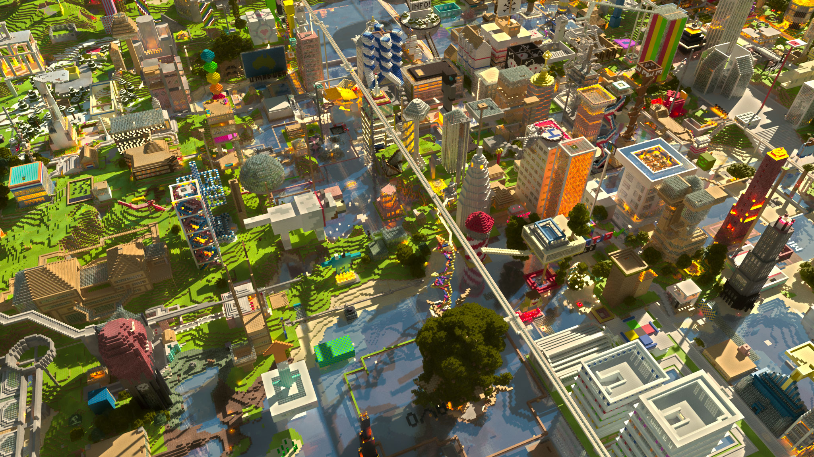

生存模式
是Minecraft中的一种游戏模式。在该模式中，玩家必须要收集资源、建造建筑、和怪物战斗、进行饥饿管理和探索世界来生存和发展。
极限模式
该模式是生存模式的另一种形态，和生存模式功能相同，但是玩家只有一次生命，死后无法重生，存档将会被删除永远无法进入，且无法作弊，难度强制锁定在最高。玩家死亡后可以删除存档或以观察者模式重生。

创造模式
创造模式
创造模式移除了游戏中的生存内容，并且允许玩家方便自由地创造和破坏结构与机械，也使背景音乐发生改变。

多人模式
多人联机通过服务器实现,服务器为互联网或局域网联机提供了基本条件。服务器管理员可对服务器进行各种各样的自定义设置。根据服务器类型的不同,多人联机的体验可以大不相同。